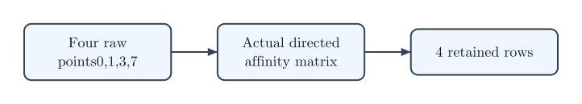
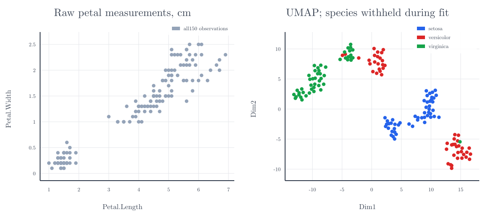
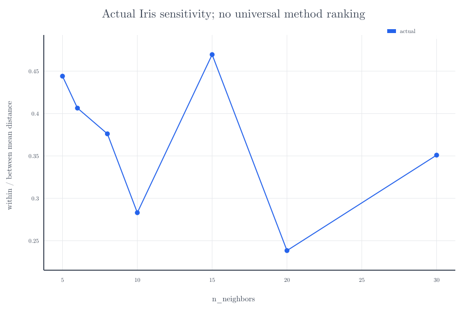
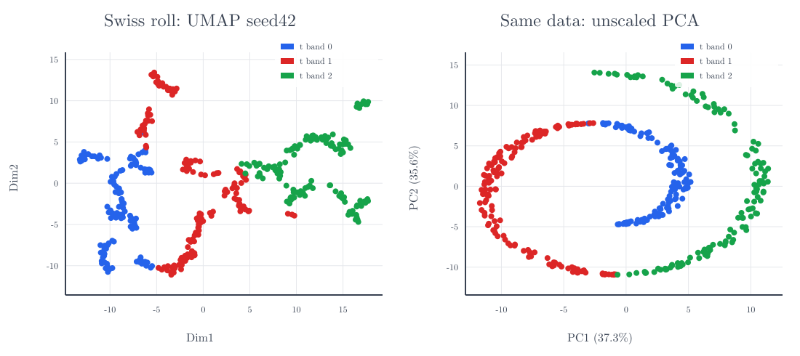

UMAP: inspectable affinities, Iris and Swiss-roll checks
Abstract
Visualizing observations with several features requires compressing their relationships into two coordinates. UMAP builds local affinities before iterative layout; we inspect those actual weights before using four unscaled Iris measurements and a known synthetic manifold.
The method
UMAP uses rho_i equal to the nearest other-point distance and directed weights exp(−max(0,d_ij−rho_i)/sigma_i) on k neighbors. Sigma is bisected toward a weight sum log2(k), with64 attempts and a1e−6 floor. Symmetric weights are v_ij=v(j|i)+v(i|j)−v(j|i)v(i|j). The layout here uses fixed curve1/(1+d²), processes every edge above1e−4 each epoch, and adds negative-sampled repulsion. These are explicit simplifications: min_dist is accepted but does not shape the curve; deterministic weighted edge processing differs from reference UMAP edge sampling. Dense affinities use O(n²) storage. Duplicate nearest distances can make the calibration target unattainable.
Simple worked example
#include <dm/dm.hpp>
int main() {
namespace a = dm::algorithms;
namespace g = dm::graphics;
std::filesystem::create_directories("build");
dm::dstruct::DataFrame d;
d.add_column("x", std::vector<double>{0, 1, 3, 7});
dm::stats::UMAPOptions o;
o.n_neighbors = 2;
o.max_iterations = 1;
dm::stats::UMAP m(d, {"x"}, o);
const auto &weights = m.directed_memberships();
std::print("| source | target | actual directed weight |\n|---:|---:|---:|\n");
for (std::size_t i = 0; i < 4; ++i)
for (std::size_t j = 0; j < 4; ++j)
if (i != j)
std::print("|{}|{}|{}|\n", i, j, weights(i, j));
dm::dstruct::DataFrame tied;
tied.add_column("x", std::vector<double>{0, 1, 3, 7, 11, 18});
dm::stats::UMAPOptions tied_options;
tied_options.n_neighbors = 3;
tied_options.max_iterations = 1;
dm::stats::UMAP tied_model(tied, {"x"}, tied_options);
double tied_sum = 0;
for (std::size_t j = 0; j < 6; ++j)
tied_sum += tied_model.directed_memberships()(3, j);
std::print("\nAt x7 the two nearest distances both equal4: actual sum {}, requested log2(3) {}. This target is unattainable.\n",
tied_sum, std::log2(3.));
g::Diagram concept_diagram(48, 1100);
concept_diagram.node("n0", {0, 0}, "Four raw points0,1,3,7");
concept_diagram.node("n1", {5, 0}, "Actual directed affinity matrix");
concept_diagram.node("n2", {10, 0},
std::format("{} retained rows", m.observations()));
concept_diagram.edge("n0", "n1").edge("n1", "n2");
concept_diagram.save_svg("build/umap_iris_tiny.svg");
}| source | target | actual directed weight |
|---|---|---|
| 0 | 1 | 1 |
| 0 | 2 | 1.1253517471925912e-07 |
| 0 | 3 | 0 |
| 1 | 0 | 1 |
| 1 | 2 | 1.1253517471925912e-07 |
| 1 | 3 | 0 |
| 2 | 0 | 1.1253517471925912e-07 |
| 2 | 1 | 1 |
| 2 | 3 | 0 |
| 3 | 0 | 0 |
| 3 | 1 | 1.1253517471925912e-07 |
| 3 | 2 | 1 |
At x7 the two nearest distances both equal4: actual sum 2, requested log2(3) 1.584962500721156. This target is unattainable.

The retained original experiment
#include <dm/dm.hpp>
int main() {
namespace a = dm::algorithms;
namespace g = dm::graphics;
std::filesystem::create_directories("build");
const auto iris = dm::datasets::iris();
const std::vector<std::string> features{"Sepal.Length", "Sepal.Width",
"Petal.Length", "Petal.Width"};
std::vector<std::string> labels;
for (std::size_t i = 0; i < iris.nrows(); ++i)
labels.push_back(iris.string_at("Species", i));
dm::stats::UMAP m(iris, features);
std::print("{}\n", m.summary());
std::print("\n{}\n",
dm::stats::embedding_group_distances(m.embedding(), labels).to_md());
auto eda = g::RPlot::create();
eda.points(iris.numeric_column("Petal.Length").values(),
iris.numeric_column("Petal.Width").values(),
"all150 observations", {148, 163, 184});
eda.title("Raw petal measurements, cm").x_label("Petal.Length").y_label(
"Petal.Width");
auto embed = m.plot_embedding(labels);
embed.title("UMAP; species withheld during fit");
g::RLayout::create(1, 2).add(eda).add(embed).size(1100, 490).fit_panels().save_svg("build/umap_iris_original.svg");
std::print("\n| row | actual calibrated value |\n|---:|---:|\n");
for (std::size_t i : {0, 1, 50, 51, 100, 101, 149})
std::print("|{}|{}|\n", i, m.sigmas()[i]);
}UMAP (Uniform Manifold Approximation and Projection) Features: Sepal.Length, Sepal.Width, Petal.Length, Petal.Width Distance metric: euclidean Number of obs: 150, dimensions: 2 n_neighbors: 15, min_dist: 0.1, epochs: 500, learning_rate: 1 Mean calibrated sigma: 0.1436
| within | between | within_pairs | between_pairs |
|---|---|---|---|
| 7.339 | 15.631 | 3675 | 7500 |
| row | actual calibrated value |
|---|---|
| 0 | 0.05905961990356445 |
| 1 | 0.04622077941894531 |
| 50 | 0.20017051696777344 |
| 51 | 0.10053300857543945 |
| 100 | 0.1448211669921875 |
| 101 | 0.29654884338378906 |
| 149 | 0.08281612396240234 |

Checking the theory and controls
#include <dm/dm.hpp>
int main() {
namespace a = dm::algorithms;
namespace g = dm::graphics;
std::filesystem::create_directories("build");
const auto iris = dm::datasets::iris();
const std::vector<std::string> features{"Sepal.Length", "Sepal.Width",
"Petal.Length", "Petal.Width"};
std::vector<std::string> labels;
for (std::size_t i = 0; i < iris.nrows(); ++i)
labels.push_back(iris.string_at("Species", i));
std::vector<double> x, y;
std::print("| setting | within | between | actual calibration diagnostic |\n|---:|---:|---:|---:|\n");
for (std::size_t setting : {5, 6, 8, 10, 15, 20, 30}) {
dm::stats::UMAPOptions o;
o.n_neighbors = setting;
dm::stats::UMAP m(iris, features, o);
auto metrics =
dm::stats::embedding_group_distances(m.embedding(), labels);
double max_error = 0;
for (std::size_t i = 0; i < m.observations(); ++i) {
double sum = 0;
for (std::size_t j = 0; j < m.observations(); ++j)
sum += m.directed_memberships()(i, j);
max_error =
std::max(max_error, std::abs(sum - std::log2(double(setting))));
}
std::print("|{}|{}|{}|{}|\n", setting, metrics.double_at("within", 0),
metrics.double_at("between", 0), max_error);
x.push_back(setting);
y.push_back(metrics.double_at("within", 0) / metrics.double_at(
"between", 0));
}
auto p = g::RPlot::create();
p.line(x, y, "actual", {37, 99, 235}, 2);
p.points(x, y, "", {37, 99, 235}, 5);
p.title("Actual Iris sensitivity; no universal method ranking").x_label(
"n_neighbors").y_label("within / between mean distance");
p.save_svg("build/umap_iris_controls.svg");
}| setting | within | between | actual calibration diagnostic |
|---|---|---|---|
| 5 | 6.996554012189275 | 15.755106305593218 | 0.678071904640793 |
| 6 | 6.149937634528413 | 15.132938552314748 | 0.41503749880699914 |
| 8 | 5.611602902236289 | 14.92162837330373 | 9.882386845738722e-06 |
| 10 | 5.8076291946542 | 20.517353244730575 | 9.931389786554945e-06 |
| 15 | 7.338896928573168 | 15.630771499452969 | 9.968621200506789e-06 |
| 20 | 4.44636650606559 | 18.653163642312705 | 9.985276531843112e-06 |
| 30 | 7.1551744288936 | 20.388717226786653 | 9.923011340617904e-06 |

Sensitivity and selected work
#include <dm/dm.hpp>
int main() {
namespace a = dm::algorithms;
namespace g = dm::graphics;
std::filesystem::create_directories("build");
auto roll = dm::stats::embedding_swiss_roll();
std::vector<std::string> features{"x", "y", "z"};
dm::stats::UMAPOptions o;
o.n_neighbors = 8;
dm::stats::UMAP m(roll, features, o);
dm::stats::PCA pca(roll, features, {true, false});
dm::stats::MDS mds(roll, features);
dm::stats::Isomap iso(roll, features);
std::print("| method | abs corr(axis0,t) | abs corr(axis1,t) | abs corr(axis0,height) | abs " "corr(axis1,height) |\n|---|---:|---:|---:|---:|---:|\n");
auto t =
roll.numeric_column("t").values(), h =
roll.numeric_column("height").values();
for (auto pair : std::vector<std::pair<std::string, const dm::linalg::DenseMatrix<double> *>>{{"UMAP", &m.embedding()}, {"PCA unscaled", &pca.scores()}, {"MDS", &mds.embedding()}, {"Isomap k10", &iso.embedding()}}) {
const auto &z = *pair.second;
std::print("|{}|{}|{}|{}|{}|\n", pair.first,
dm::stats::embedding_abs_correlation(z.col(0), t),
dm::stats::embedding_abs_correlation(z.col(1), t),
dm::stats::embedding_abs_correlation(z.col(0), h),
dm::stats::embedding_abs_correlation(z.col(1), h));
}
std::vector<std::string> bins;
for (auto q : t)
bins.push_back("t band " + std::to_string(int((q -
1.5 * std::numbers::pi) /
std::numbers::pi)));
auto fitted = m.plot_embedding(bins);
fitted.title("Swiss roll: UMAP seed42");
auto baseline = pca.plot_scores(bins);
baseline.title("Same data: unscaled PCA");
g::RLayout::create(1, 2).add(fitted).add(baseline).size(1100, 490).fit_panels().save_svg("build/umap_iris_work.svg");
std::print("\n| Swiss k | abs corr(axis0,t) | abs corr(axis1,height) |\n|---:|---:|---:|\n");
for (std::size_t k : {5, 6, 8, 10, 15, 20, 30}) {
dm::stats::UMAPOptions sweep;
sweep.n_neighbors = k;
dm::stats::UMAP z(roll, features, sweep);
std::print("|{}|{}|{}|\n", k,
dm::stats::embedding_abs_correlation(z.dimension(0), t),
dm::stats::embedding_abs_correlation(z.dimension(1), h));
}
auto iris = dm::datasets::iris();
std::vector<std::string> labels;
for (std::size_t i = 0; i < iris.nrows(); ++i)
labels.push_back(iris.string_at("Species", i));
dm::stats::TSNE comparator(iris,
{"Sepal.Length", "Sepal.Width", "Petal.Length",
"Petal.Width"});
std::print("\nIris t-SNE comparator, labels withheld:\n\n{}\n",
dm::stats::embedding_group_distances(comparator.embedding(),
labels).to_md());
}| method | abs corr(axis0,t) | abs corr(axis1,t) | abs corr(axis0,height) | abs corr(axis1,height) |
|---|---|---|---|---|
| UMAP | 0.9497467419757026 | 0.32024758045011514 | 0.06667555224965689 | 0.7166988429210641 |
| PCA unscaled | 0.24261224339616808 | 0.02535787356309644 | 0.08642574462497842 | 0.002206843045475988 |
| MDS | 0.24261224339616788 | 0.0253578735630985 | 0.08642574462495146 | 0.00220684304547638 |
| Isomap k10 | 0.39050122094356476 | 0.4441381770222513 | 0.031787855280948484 | 0.0696622359216511 |
| Swiss k | abs corr(axis0,t) | abs corr(axis1,height) |
|---|---|---|
| 5 | 0.9267777819280084 | 0.6915366201659117 |
| 6 | 0.9621415660421958 | 0.6809598756962967 |
| 8 | 0.9497467419757026 | 0.7166988429210641 |
| 10 | 0.9740034803558687 | 0.4607570724634549 |
| 15 | 0.9837038460469067 | 0.653161311507676 |
| 20 | 0.9823549647363059 | 0.3604561163860265 |
| 30 | 0.9875736680149388 | 0.55105685736743 |
Iris t-SNE comparator, labels withheld:
| within | between | within_pairs | between_pairs |
|---|---|---|---|
| 3.282 | 46.480 | 3675 | 7500 |

Interpretation and limits
The models fit unsupervised host numerical layouts; labels and manifold coordinates are held outside fitting. Species distances and axis correlations are descriptive checks, not classification accuracy. Translation, rotation and scale complicate direct coordinate comparisons; correlation is axis-dependent and is not a rotation-invariant manifold score. Dense pair geometry is limited to2000 rows and64 embedding axes; nonfinite features/options and distances throw. Fitting remains finite-iteration optimization without a convergence guarantee. Original raw Iris features, default settings, perplexity/neighbor sweeps,400-point seed42 Swiss roll and PCA/MDS/Isomap controls are retained. t-SNE random initialization uses standard deviation.01. UMAP min_dist has no computational effect in this simplified kernel. Public affinity matrices are borrowed read-only state from the actual fit.
Every figure is saved locally by its complete editable program. No separate reconstruction supplies algorithm state. Counters describe the selected events, not elapsed time or peak memory.
References
Verified in the shared ten-document batch: 85 scoped native cases;21 directly
instrumented ASan/UBSan cases;36 executable public examples;63/63 definitions
across13 full scopes plus8 changed mixed-scope contracts;10 hovers;14393
independent records/67914 checks;frozen valid-input comparisons across all ten
families including bit-identical default Iris fits;11 checkout/installed
standalone headers and linked ten-family consumer;40 executed programs and40
inspected figures with both exports. Receipts:
build/mepml-conversion/batch-404-413/.